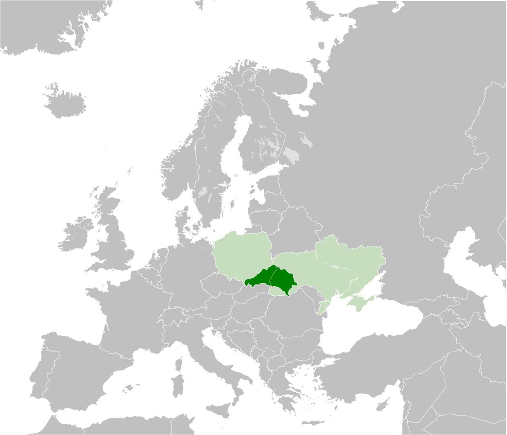
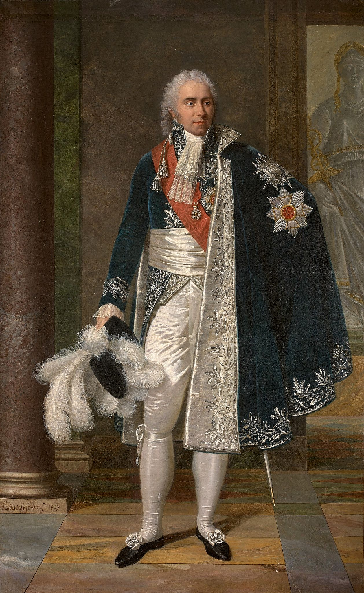
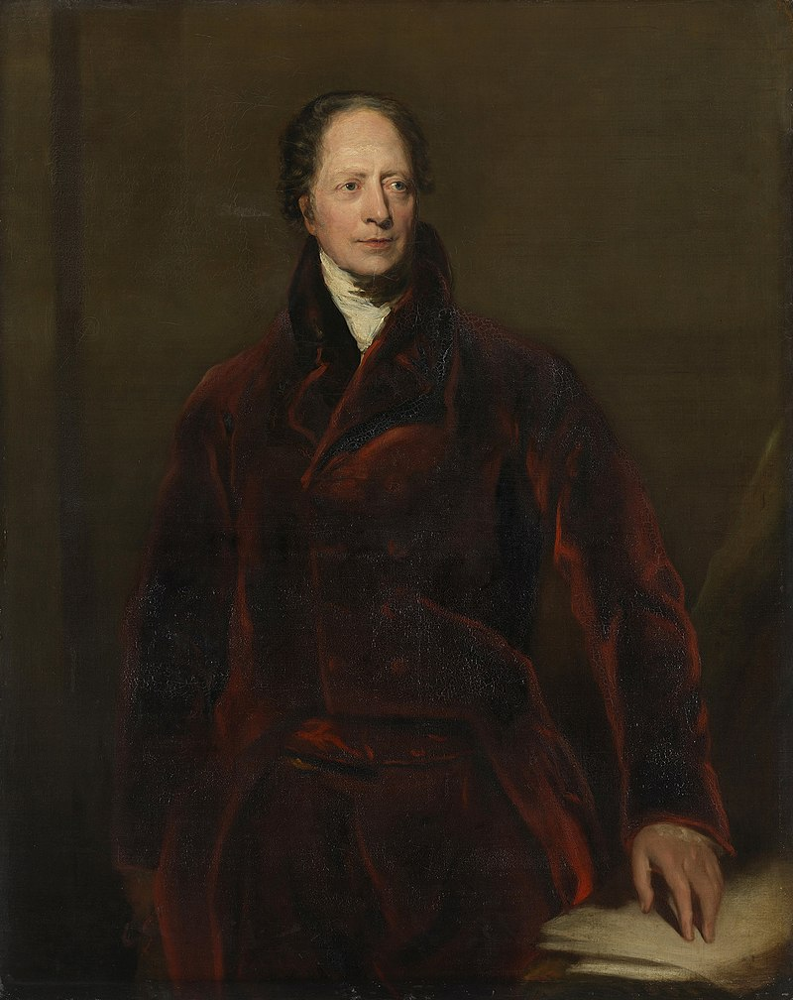

휴전 (11) - 나폴레옹 대폭발
게시: 2023-09-11T06:30:16+09:00
6월 27일 드레스덴으로 메테르니히를 불러 면담을 한 나폴레옹이 무려 무려 9시간이 넘는 이 회의에서 구체적으로 무슨 말을 했는지는 명확하게 남아 있지 않습니다. 뭔가 할 말이 많긴 많았을 것 같은데 정말 아무도 배석시키지 않고 1대1로만 면담을 했기 때문에 이들의 대화를 명확하게 기록한 사람이 없기 때문입니다. 물론 나폴레옹도 메테르니히도 각각 회고록을 남겼습니다만, 당대의 모든 회고록이 그렇듯이 자기에게 유리한 대로 진실과는 거리가 먼 이야기만 써놓았을 가능성이 크기 때문에 신빙성이 높지는 않습니다. 또한, 이 두 사람도 9시간 동안 무슨 이야기가 오갔는지 시시콜콜 녹취록을 적어 놓은 것은 아니었기 때문에 별로 많은 정보를 남기지도 않았습니다. 메테르니히가 그 회담이 있었던 날 밤 자신의 주군인 프란츠 1세에게 보낸 편지에 적은 내용을 보면, 나폴레옹과의 긴 회담은 '우정과 분노가 기묘하게 뒤섞인 매우 흥미로운 경험'이었다고 합니다. 신빙성이 떨어진다고 해도, 메테르니히의 회고록 중 나폴레옹과의 회담 내용을 요약하면 대략 이랬습니다. 메테르니히가 자신이 제국들과 유럽 전체의 평화를 위해 왔다고 나폴레옹에게 말하자, 나폴레옹은 말을 끊고 이렇게 말했습니다. "나도 평화 조약을 맺을 준비가 되어 있지만 그 무엇보다 나의 명예가 가장 소중해. 자넨 평화란 것을 무엇이라고 이해하고 있는가? 조건이 무엇인가? 내게서 뭘 강탈하려고 온 것인가? 이탈리아와 브라반트(Brabant, 벨기에-네덜란드에 걸친 지방명), 로렌느(Lorraine)를 원하나? 난 단 한 치의 땅도 양보할 생각이 없네. 내가 동의하는 평화 협정 조건은 딱 하나, status quo ante bellum (스타투스 쿠오 안테 벨룸) 뿐이야." 여기서 status quo ante bellum라는 것은 '전쟁 이전의 상태'를 뜻하는 것입니다. 즉, 1812년 러시아 원정 이전의 상태를 말하는 것으로서, 나폴레옹은 자신의 곤경을 전혀 인정할 생각이 없었던 것입니다. 그러나 나폴레옹은 자존심 못지 않게 현실 감각도 있는 사람이었습니다. 그는 이런 강경한 입장을 드러낸 직후에 곧 예외적 조항도 제시했습니다. 역시 바르샤바 공국이었습니다. 어차피 이미 바르샤바 공국 전체가 러시아군 손에 들어간 상태였으니 나폴레옹으로서는 남의 땅을 가지고 생색을 내는 셈이었습니다. 나폴레옹은 바르샤바 공국의 일부를 러시아에게 떼어줄 생각은 있으나, 자신을 배신한 프로이센에게는 정말 아무 것도 줄 수 없다고 했습니다. 또한 오스트리아는 이번 전쟁에서 자신과 싸운 적도 없으니 배상해줄 것도 없다고 버텼습니다. 그러면서도 또 여지를 남겼습니다. 가령 오스트리아가 만약 서(西) 갈리시아를 원하거나 프로이센이 옛 영토를 원한다면 그것도 배려를 해줄 수는 있으나 반드시 그에 대한 보상을 제시해야 한다고 흥정을 했습니다.

(갈리시아(Galicia)는 실제로 고대 로마와 그리스를 침공했던 갈리아족의 발원지라고 알려져 있습니다. 지금의 폴란드 남부와 서부 우크라이나에 펼쳐진 지역으로서, 저 지도의 짙은 녹색 부분입니다. 요즘 우크라이나 전쟁에서 자주 이름이 나온 서부 우크라이나의 리비우(Lviv)도 바로 갈리시아의 일부입니다.) 나폴레옹은 매우 노련한 장사치처럼 흥정과 협박을 번갈아가며 제시했습니다. 가령 이런 말을 하기도 했습니다. "혹시 일리리아를 원하나? 난 그 지방을 손에 넣기 위해 30만의 병력을 소모했네. 오스트리아가 그 땅을 다시 갖기 위해서는 그 숫자만큼의 병력을 잃어야 할 것일세."

(1811년부터 1813년 11월까지 프랑스의 외무부 장관을 맡았던 바사노 공작 마레입니다. 그는 나폴레옹보다 6살 연상이었고, 원래 부르고뉴 지방의 디종(Dijon) 출신으로서 내과의사의 아들이었습니다. 아버지는 그가 자신의 뒤를 이어 의사가 되기를 바랐으나 그는 법을 택하여 일찍부터 파리에서 변호사 생활을 시작했습니다. 그는 시민계급답게 프랑스 대혁명에서 시민계급의 편을 택했고, 온건파에 속했습니다. 젊고 실력있던 그는 혁명 정부에서 요직을 맡아 런던에 가서 윌리엄 피트 수상과 면담을 하기도 했습니다. 나폴레옹이 몰락할 때 끝까지 그의 곁을 지켰던 그는 부르봉 왕가가 복위하자 오스트리아 그라츠(Graz)로 유배 생활을 떠났고, 1820년에야 귀환이 허락되었습니다. 1830년 7월 혁명으로 루이 필립이 등극하자 그는 프랑스 귀족으로 복원되었고, 잠깐 프랑스의 수상을 맡기도 했습니다. 1839년 파리에서 사망했습니다.) 회담 시작 전에 메테르니히는 오스트리아의 요구 조건을 담은 제안서(memoranda)를 회담 전날 마레(Hugues-Bernard Maret, duc de Bassano)에게 전달했으나, 나폴레옹은 시간을 내지 못해 그걸 아직 읽지 못했다고 말했습니다. 실제로 나폴레옹은 전날 오후 2시 메테르니히가 제안서를 들고 드레스덴 궁전에 도착했을 때 인근의 쾨니히스브를릭(Konigsbrlick)이라는 마을에 가있다가 메테르니히가 왔다는 소식을 듣고 다음날 오전 10시에 돌아왔고, 돌아오자마자 2시간도 안 되어 메테르니히를 만난 것이었습니다. 그러나 오스트리아 요구한 유일한 영토인 일리리아에 대한 이야기를 저런 식으로 비아냥거리며 꺼낸 것을 보면 분명히 제안서 내용을 미리 알고 있는 것이 틀림 없었습니다. 나폴레옹의 완강하면서도 교활한 태도에 메테르니히는 당황했지만 그도 노련한 외교관이었습니다. 이런 나폴레옹에 대해서 그는 자신이 평화 협상 조건을 상의하러 온 것이 아니라, 단지 교전 중인 국가들이 오스트리아의 중재 하에 신속히 협상을 시작하도록 간청하기 위해서 왔으며, 그렇게 열릴 평화 협상에서 오스트리아는 어느 편도 들지 않고 엄정한 중립을 지키며 중재에 나설 것이라고 약속했습니다. 만약 나폴레옹이 그를 거부할 경우 그 사실을 연합국 측에 통보해야 한다고 넌지시 협박하는 것도 빼먹지 않았습니다. 심지어 나폴레옹이 자랑하는 그랑다르메를 드레스덴으로 오는 길에 보았는데, 어린 아이들이 많이 포함되어 있더라는 비아냥까지도 서슴치 않았습니다. 그러면서 협상을 통해 평화를 이루는 것이 나폴레옹의 황위를 지키는 길이라고 나름 진지한 충언을 하기도 했습니다. 그러나 나름 충언이랍시고 던진 말이 나폴레옹에게는 역린이었나 봅니다. 당시 연합군의 그 누구도 나폴레옹을 프랑스의 왕좌에서 끌어내릴 생각까지는 하고 있지 않았습니다만, 실은 나폴레옹은 그런 최악의 경우를 상상하고 있었고, 오스트리아측에서 그런 것을 넌지시 비치는 것만으로도 뭔가가 폭발했던 것 같습니다. 메테르니히의 불완전한 설명에 따르면 (정확하게 황위를 지키는 방법 운운한 직후인지 여부는 모르겠으나) 나폴레옹은 어느 순간 모자를 방 구석으로 집어 던지며 고함을 질렀습니다. "그러니까 너희들이 원하는 것이 전쟁인가? 좋아, 전쟁을 하자구. 난 뤼첸에서 프로이센군을 섬멸했고 바우첸에서는 러시아군을 박살냈어. 이제 너희 차례를 원하는군. 좋아, 빈(Wien)에서 보자구." 영화라면 아마 그 자리에서 나폴레옹이 방을 뛰쳐나가면서 장면이 바뀌었을 것입니다만, 실제 역사는 영화보다는 좀 더 구질구질한 법입니다. 메테르니히는 그 후로도 4일간이나 드레스덴에 머물며 나폴레옹과 협상을 계속 했습니다. 그는 그저 프라하에서 연합군 측과 평화 협상 테이블에라도 앉아보시라고 끈질기게 매달렸고, 나폴레옹도 7월 5일 열릴 그 협상에 콜랭쿠르를 참석시키기로 약속했습니다. 아울러 7월 20일까지였던 휴전 기간을 8월 10일까지 연장했고, 8월 10일 이후에도 6일간은 전투 행위를 상호 금지하기로 약속했습니다. 이건 메테르니히가 라인헨바흐에서 러시아-프로이센측과 협의했던 내용과는 상당히 다른 결과물이 나온 셈이었습니다. 원래의 약속대로라면 나폴레옹이 메테르니히의 4가지 평화 협정 조건을 거부했으니 오스트리아는 즉각 참전헤야했고, 저렇게 일방적으로 휴전 기간을 연장해주어서는 안되었습니다. 연합군측이 메테르니히의 드레스덴 회담 결과에 대해 항의하자, 연합군 사령부에서 오스트리아를 대표하는 사절 역할을 하고 있던 스타디온은 입장이 무척 난처해졌습니다. 스타디온은 실은 오스트리아군의 전시동원을 위해서는 시간이 좀 더 필요했기 때문이라고 변명을 해야 했습니다. 그러나 시간이 좀 더 필요한 것은 나폴레옹이었던 것으로 보였습니다. 7월 5일의 프라하 회담을 위해 러시아측에서는 요한 폰 안슈테트(Johann von Anstedt) 남작이, 프로이센측에서는 빌헬름 폰 훔볼트(Wilhelm von Humboldt)가 일찌감치 프라하에 도착해서 기다렸지만, 프랑스의 콜랭쿠르는 회담일이 임박해서야 도착했으며, 협상에도 미적지근한 태도를 보였습니다. 누가 봐도 시간을 끌며 다른 꿍꿍이를 꾸미는 것은 나폴레옹측이었습니다.

(이때 프라하 회담에 참석했던 훔볼트는 유명한 학자인 알렉산더 훔볼트가 아니라 그의 형입니다. 베를린에 있는 훔볼트 대학은 흔히 동생 훔볼트의 이름을 딴 대학이라고 알려져 있지만 실은 이 형의 이름도 함께 기리기 위해서 그렇게 명명된 대학입니다. 형 훔볼트도 유명한 철학자이자 언어학자였고, 외교관이자 교육자로서 베를린의 훔볼트 대학의 설립자 중 한 명이기도 합니다. 물론 처음 1810년에 개교할 때의 대학 이름은 그냥 베를린 대학이었고, 훔볼트 대학으로 개명된 것은 1949년의 일입니다.) Source : The Life of Napoleon Bonaparte, by William Milligan Sloane Napoleon and the Struggle for Germany, by Leggiere, Michael V Memoirs of Prince Metternich https://en.wikipedia.org/wiki/Galicia_%28Eastern_Europe%29 https://en.wikipedia.org/wiki/Hugues-Bernard_Maret,_duc_de_Bassano